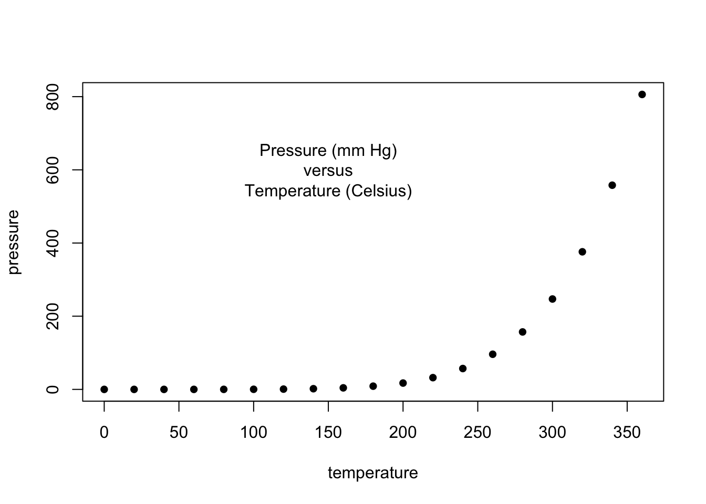
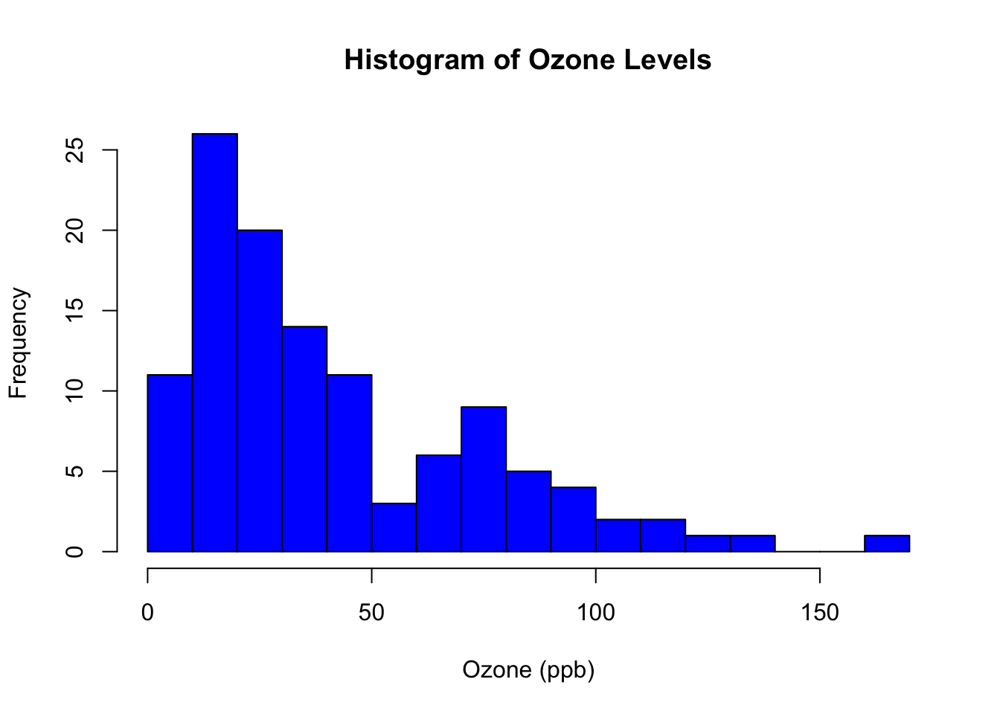
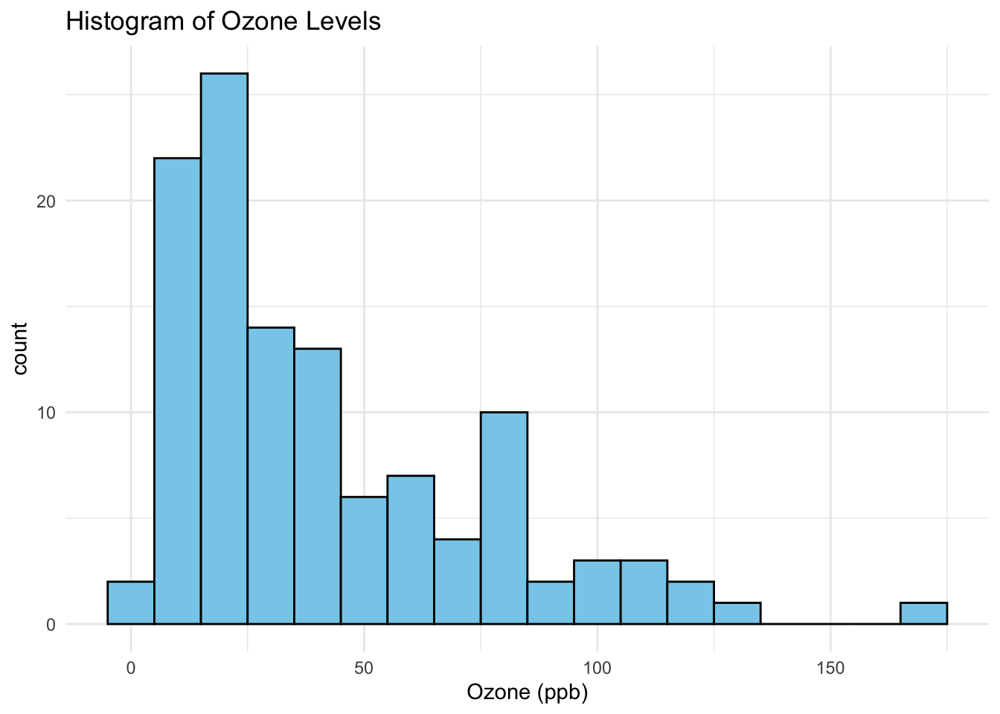

$lm1
Estimate Std. Error t value Pr(>|t|)
(Intercept) 3.0000909 1.1247468 2.667348 0.025734051
x1 0.5000909 0.1179055 4.241455 0.002169629
$lm2
Estimate Std. Error t value Pr(>|t|)
(Intercept) 3.000909 1.1253024 2.666758 0.025758941
x2 0.500000 0.1179637 4.238590 0.002178816
$lm3
Estimate Std. Error t value Pr(>|t|)
(Intercept) 3.0024545 1.1244812 2.670080 0.025619109
x3 0.4997273 0.1178777 4.239372 0.002176305
$lm4
Estimate Std. Error t value Pr(>|t|)
(Intercept) 3.0017273 1.1239211 2.670763 0.025590425
x4 0.4999091 0.1178189 4.243028 0.002164602
Preparing for the plots
op <-par(mfrow =c(2, 2), mar =0.1+c(4,4,1,1), oma =c(0, 0, 2, 0))
Plot charts using for loop
for(i in1:4) { ff[2:3] <-lapply(paste0(c("y","x"), i), as.name) plot(ff, data = anscombe, col ="red", pch =21, bg ="orange", cex =1.2, xlim =c(3, 19), ylim =c(3, 13)) abline(mods[[i]], col ="blue") }
mtext("Anscombe's 4 Regression data sets", outer =TRUE, cex =1.5)
par(op)
2. Generative Art
Gyre 35700 by Mark Stock
This work visually and beautifully expresses natural patterns by simulating currents and eddies in the ocean with “computer code.” The movement in the ocean is still being studied to see how it affects global climate change, and this research can be used to help understand visually.
MiniCityArt by Mark Stock
This is an artistically created scale model of a city using “3D printing” technology. These technologies can be used in fields such as architecture and urban construction to help understand.
The following objects are masked from 'package:stats':
filter, lag
The following objects are masked from 'package:base':
intersect, setdiff, setequal, union
for (i in1:depth) axiom=gsubfn(".", rules, axiom)actions=str_extract_all(axiom, "\\d*\\+|\\d*\\-|F|L|R|\\[|\\]|\\|") %>% unliststatus=data.frame(x=numeric(0), y=numeric(0), alfa=numeric(0))points=data.frame(x1 =0, y1 =0, x2 =NA, y2 =NA, alfa=90, depth=1)# Generating data# Note: may take a minute or twofor (action in actions){if (action=="F") { x=points[1, "x1"]+cos(points[1, "alfa"]*(pi/180)) y=points[1, "y1"]+sin(points[1, "alfa"]*(pi/180)) points[1,"x2"]=x points[1,"y2"]=ydata.frame(x1 = x, y1 = y, x2 =NA, y2 =NA,alfa=points[1, "alfa"],depth=points[1,"depth"]) %>%rbind(points)->points }if (action %in%c("+", "-")){ alfa=points[1, "alfa"] points[1, "alfa"]=eval(parse(text=paste0("alfa",action, angle))) }if(action=="["){data.frame(x=points[1, "x1"], y=points[1, "y1"], alfa=points[1, "alfa"]) %>%rbind(status) -> status points[1, "depth"]=points[1, "depth"]+1 }if(action=="]"){ depth=points[1, "depth"] points[-1,]->pointsdata.frame(x1=status[1, "x"], y1=status[1, "y"], x2=NA, y2=NA,alfa=status[1, "alfa"],depth=depth-1) %>%rbind(points) -> points status[-1,]->status }}ggplot() +geom_segment(aes(x = x1, y = y1, xend = x2, yend = y2),lineend ="round",color="grey", # Set your own Fall color?data=na.omit(points)) +coord_fixed(ratio =1) +theme_void() # No grid nor axes
4. Write a critique on a chart in published work
According to Nathan Yau, axes in a chart can significantly influence the interpretation of data, potentially distorting the intended message. For example, if the Y-axis range is artificially scaled down, variability in the data can be overemphasized, while if it is artificially scaled up, small differences can easily be overlooked.
Average Number of Actual Weekly Hours of Work in Main Job. Full-time employees. 2013
This bar chart was created by the German economic development agency GTAI. As we can see from this chart, German workers seem to work more hours than workers in other EU countries. The fact that Germany’s working hours are visually prominent compared to other countries in this chart seems to be intentional. The problem is that the starting point is 36, not 0. This chart should have been drawn with 0 included.
The graph below, redrawn with 0 included, shows that the differences in working hours between European countries are not that significant, even when visually observed.
Average Number of Actual Weekly Hours of Work in Main Job. Full-time employees. 2013
___________________________________________
Assignment 2
Paul Murrell’s R examples
1. Basic Plot
plot(pressure, pch=16) # Can you change pch?text(150, 600, "Pressure (mm Hg)\nversus\nTemperature (Celsius)")

This line creates a basic scatter plot with pressure on the y-axis and temperature on the x-axis. The argument pch=16 specifies the shape of the points (solid circles). Also, this command adds text to the plot. The text appears at the specified coordinates (x=150, y=600), showing “Pressure (mm Hg) versus Temperature (Celsius)” at the top of the plot.
par(mfrow=c(3, 2))
2. Scatterplot
x <-c(0.5, 2, 4, 8, 12, 16)y1 <-c(1, 1.3, 1.9, 3.4, 3.9, 4.8)y2 <-c(4, .8, .5, .45, .4, .3)# Setting label orientation, margins c(bottom, left, top, right) & text sizepar(las=1, mar=c(4, 4, 2, 4), cex=.7) plot.new()plot.window(range(x), c(0, 6))lines(x, y1)lines(x, y2)points(x, y1, pch=16, cex=2) # Try different cex value? points(x, y2, pch=21, bg="white", cex=2) # Different background colorpar(col="gray50", fg="gray50", col.axis="gray50")axis(1, at=seq(0, 16, 4)) # What is the first number standing for?axis(2, at=seq(0, 6, 2))axis(4, at=seq(0, 6, 2))box(bty="u")mtext("Travel Time (s)", side=1, line=2, cex=0.8)mtext("Responses per Travel", side=2, line=2, las=0, cex=0.8)mtext("Responses per Second", side=4, line=2, las=0, cex=0.8)text(4, 5, "Bird 131")
The lines() function adds a line connecting the points defined by the x and y1 coordinates. Then, points() adds larger points (since cex=2) on the same line, using solid circles (pch=16). Also, these commands customize the axes and labels. The axis() function adds ticks and numbers to the x and y axes, box() draws a box around the plot, and mtext() adds text labels to the plot’s margins (axis titles).
The hist() function generates a histogram of the data in Y, showing the distribution of values. The lines() function overlays a normal distribution curve on top of the histogram, allowing comparison between the sample data and a normal distribution.
This creates a barplot using the VADeaths dataset. The text() function adds the corresponding numerical values on top of each bar, providing a clear display of the exact data values.
5. Boxplot
par(mar=c(3, 4.1, 2, 0))boxplot(len ~ dose, data = ToothGrowth, boxwex =0.25, at =1:3-0.2, subset= supp =="VC", col="white", xlab="", ylab="tooth length", ylim=c(0,35))mtext("Vitamin C dose (mg)", side=1, line=2.5, cex=0.8)boxplot(len ~ dose, data = ToothGrowth, add =TRUE, boxwex =0.25, at =1:3+0.2, subset= supp =="OJ")legend(1.5, 9, c("Ascorbic acid", "Orange juice"), fill =c("white", "gray"), bty="n")
par(mar=c(5.1, 4.1, 4.1, 2.1))
A boxplot is created comparing two groups (Ascorbic acid and Orange juice). The legend() function adds a legend to the plot, helping viewers understand which group corresponds to which box in the plot.
6. Persp
x <-seq(-10, 10, length=30)y <- xf <-function(x,y) { r <-sqrt(x^2+ y^2); 10*sin(r)/r }z <-outer(x, y, f)z[is.na(z)] <-1par(mar=c(0, 0.5, 0, 0), lwd=0.5)persp(x, y, z, theta=30, phi=30, expand=0.5)
par(mar=c(5.1, 4.1, 4.1, 2.1), lwd=1)
The persp() function generates a 3D perspective plot based on the given x, y, and z values. The 3D plot displays the relationship between these variables as a smooth surface.
This creates a pie chart where each slice represents a portion of pie.sales. Each slice is labeled with the corresponding category name (e.g., “Blueberry”, “Cherry”), and shaded in different gray levels.
First, it is to find false correlations. When the data is large, correlations due to chance can appear as if they are significant, but these correlations may not actually be causal. For example, if “as ice cream sales increase, the number of drowning deaths also increases,” these two are just coincidental relationships that occur because they both increase together as the weather gets warmer. To avoid this, correlation analysis based on theoretical background or domain knowledge is necessary. Second, data bias. When collecting data during big data analysis, if biased data is collected, the analysis results may also be biased.
Overfitting and Overparameterization
Overfitting occurs when the machine learning model gives accurate predictions for training data but not for new data. When data scientists use machine learning models for making predictions, they first train the model on a known data set. Then, based on this information, the model tries to predict outcomes for new data sets. An overfit model can give inaccurate predictions and cannot perform well for all types of new data. On the other hand, overparameterization is a phenomenon in which a model becomes complex because it contains too many parameters. A large number of parameters may reduce the explanatory power of the model, which may hinder the generalization ability of the model. To solve this problem, appropriate model simplification or regularization techniques can be used.
___________________________________________
Assignment 3
1. Rerun Murrell : Boxplot Configuration
In this code, a boxplot is created using the ToothGrowth dataset, which measures tooth length in guinea pigs depending on their Vitamin C intake. The dataset is divided into two groups: Ascorbic Acid (VC) and Orange Juice (OJ), with three levels of dosage (dose). The first boxplot visualizes the relationship between the dose of Ascorbic Acid and tooth length, and the second boxplot is overlaid to show the Orange Juice group’s results.
Key visual elements include: o Box width (`boxwex`) is set to 0.25, adjusting the width of the boxes. o Positioning (`at`) shifts the boxes slightly for better comparison between the two groups. o Colors are used to differentiate between the Ascorbic Acid (white) and Orange Juice (gray) groups. o A legend is added to label the two groups.
par(mar=c(3, 4.1, 2, 0))boxplot(len ~ dose, data = ToothGrowth,boxwex =0.25, at =1:3-0.2,subset= supp =="VC", col="white",xlab="",ylab="tooth length", ylim=c(0,35))mtext("Vitamin C dose (mg)", side=1, line=2.5, cex=0.8)boxplot(len ~ dose, data = ToothGrowth, add =TRUE,boxwex =0.25, at =1:3+0.2,subset= supp =="OJ")legend(1.5, 9, c("Ascorbic acid", "Orange juice"), fill =c("white", "gray"), bty="n")
par(mar=c(5.1, 4.1, 4.1, 2.1))
o`par(mar=c(3, 4.1, 2, 0))`: This line sets the plot’s margins. The values correspond to the number of lines allocated for margins on each side of the plot (bottom, left, top, and right). o `boxwex = 0.25`: This argument adjusts the width of the boxes in the boxplot, making them narrower than the default. o `at = 1:3 - 0.2`: This shifts the boxes slightly to the left for the Ascorbic Acid group, creating space for the Orange Juice group. o `subset= supp == “VC”`: This ensures that only data for the Ascorbic Acid (VC) group is plotted. o `ylim=c(0,35)`: This sets the y-axis range from 0 to 35. o `mtext()`: This function adds a label for the x-axis, indicating the Vitamin C dose. o `add = TRUE`: This overlays the second boxplot (Orange Juice group) onto the existing plot. o `legend()`: This adds a legend to distinguish between the two groups.
2. Rerun Anscombe
Compare the regression models
## Data Visualization## Objective: Identify data or model problems using visualization## Anscombe (1973) Quartlet## Simple versionplot(anscombe$x1,anscombe$y1)summary(anscombe)
x1 x2 x3 x4 y1
Min. : 4.0 Min. : 4.0 Min. : 4.0 Min. : 8 Min. : 4.260
1st Qu.: 6.5 1st Qu.: 6.5 1st Qu.: 6.5 1st Qu.: 8 1st Qu.: 6.315
Median : 9.0 Median : 9.0 Median : 9.0 Median : 8 Median : 7.580
Mean : 9.0 Mean : 9.0 Mean : 9.0 Mean : 9 Mean : 7.501
3rd Qu.:11.5 3rd Qu.:11.5 3rd Qu.:11.5 3rd Qu.: 8 3rd Qu.: 8.570
Max. :14.0 Max. :14.0 Max. :14.0 Max. :19 Max. :10.840
y2 y3 y4
Min. :3.100 Min. : 5.39 Min. : 5.250
1st Qu.:6.695 1st Qu.: 6.25 1st Qu.: 6.170
Median :8.140 Median : 7.11 Median : 7.040
Mean :7.501 Mean : 7.50 Mean : 7.501
3rd Qu.:8.950 3rd Qu.: 7.98 3rd Qu.: 8.190
Max. :9.260 Max. :12.74 Max. :12.500
# Create four model objectslm1 <-lm(y1 ~ x1, data=anscombe)summary(lm1)
Call:
lm(formula = y1 ~ x1, data = anscombe)
Residuals:
Min 1Q Median 3Q Max
-1.92127 -0.45577 -0.04136 0.70941 1.83882
Coefficients:
Estimate Std. Error t value Pr(>|t|)
(Intercept) 3.0001 1.1247 2.667 0.02573 *
x1 0.5001 0.1179 4.241 0.00217 **
---
Signif. codes: 0 '***' 0.001 '**' 0.01 '*' 0.05 '.' 0.1 ' ' 1
Residual standard error: 1.237 on 9 degrees of freedom
Multiple R-squared: 0.6665, Adjusted R-squared: 0.6295
F-statistic: 17.99 on 1 and 9 DF, p-value: 0.00217
lm2 <-lm(y2 ~ x2, data=anscombe)summary(lm2)
Call:
lm(formula = y2 ~ x2, data = anscombe)
Residuals:
Min 1Q Median 3Q Max
-1.9009 -0.7609 0.1291 0.9491 1.2691
Coefficients:
Estimate Std. Error t value Pr(>|t|)
(Intercept) 3.001 1.125 2.667 0.02576 *
x2 0.500 0.118 4.239 0.00218 **
---
Signif. codes: 0 '***' 0.001 '**' 0.01 '*' 0.05 '.' 0.1 ' ' 1
Residual standard error: 1.237 on 9 degrees of freedom
Multiple R-squared: 0.6662, Adjusted R-squared: 0.6292
F-statistic: 17.97 on 1 and 9 DF, p-value: 0.002179
lm3 <-lm(y3 ~ x3, data=anscombe)summary(lm3)
Call:
lm(formula = y3 ~ x3, data = anscombe)
Residuals:
Min 1Q Median 3Q Max
-1.1586 -0.6146 -0.2303 0.1540 3.2411
Coefficients:
Estimate Std. Error t value Pr(>|t|)
(Intercept) 3.0025 1.1245 2.670 0.02562 *
x3 0.4997 0.1179 4.239 0.00218 **
---
Signif. codes: 0 '***' 0.001 '**' 0.01 '*' 0.05 '.' 0.1 ' ' 1
Residual standard error: 1.236 on 9 degrees of freedom
Multiple R-squared: 0.6663, Adjusted R-squared: 0.6292
F-statistic: 17.97 on 1 and 9 DF, p-value: 0.002176
lm4 <-lm(y4 ~ x4, data=anscombe)summary(lm4)
Call:
lm(formula = y4 ~ x4, data = anscombe)
Residuals:
Min 1Q Median 3Q Max
-1.751 -0.831 0.000 0.809 1.839
Coefficients:
Estimate Std. Error t value Pr(>|t|)
(Intercept) 3.0017 1.1239 2.671 0.02559 *
x4 0.4999 0.1178 4.243 0.00216 **
---
Signif. codes: 0 '***' 0.001 '**' 0.01 '*' 0.05 '.' 0.1 ' ' 1
Residual standard error: 1.236 on 9 degrees of freedom
Multiple R-squared: 0.6667, Adjusted R-squared: 0.6297
F-statistic: 18 on 1 and 9 DF, p-value: 0.002165
$lm1
Estimate Std. Error t value Pr(>|t|)
(Intercept) 3.0000909 1.1247468 2.667348 0.025734051
x1 0.5000909 0.1179055 4.241455 0.002169629
$lm2
Estimate Std. Error t value Pr(>|t|)
(Intercept) 3.000909 1.1253024 2.666758 0.025758941
x2 0.500000 0.1179637 4.238590 0.002178816
$lm3
Estimate Std. Error t value Pr(>|t|)
(Intercept) 3.0024545 1.1244812 2.670080 0.025619109
x3 0.4997273 0.1178777 4.239372 0.002176305
$lm4
Estimate Std. Error t value Pr(>|t|)
(Intercept) 3.0017273 1.1239211 2.670763 0.025590425
x4 0.4999091 0.1178189 4.243028 0.002164602
# Preparing for the plotsop <-par(mfrow =c(2, 2), mar =0.1+c(4,4,1,1), oma =c(0, 0, 2, 0))# Plot charts using for loopfor(i in1:4) { ff[2:3] <-lapply(paste0(c("y","x"), i), as.name)plot(ff, data = anscombe, col ="red", pch =21, bg ="orange", cex =1.2,xlim =c(3, 19), ylim =c(3, 13))abline(mods[[i]], col ="blue")}mtext("Anscombe's 4 Regression data sets", outer =TRUE, cex =1.5)
par(op)
The image shows four different datasets from Anscombe’s quartet, and though the regression lines (blue lines) appear similar, the underlying data distribution differs significantly between the sets. The task here is to run regression analysis on each dataset (y1 ~ x1, y2 ~ x2, etc.), compare their regression coefficients and R-squared values, and discuss how the same summary statistics could result from different data patterns.
Call:
lm(formula = y1 ~ x1, data = anscombe)
Residuals:
Min 1Q Median 3Q Max
-1.92127 -0.45577 -0.04136 0.70941 1.83882
Coefficients:
Estimate Std. Error t value Pr(>|t|)
(Intercept) 3.0001 1.1247 2.667 0.02573 *
x1 0.5001 0.1179 4.241 0.00217 **
---
Signif. codes: 0 '***' 0.001 '**' 0.01 '*' 0.05 '.' 0.1 ' ' 1
Residual standard error: 1.237 on 9 degrees of freedom
Multiple R-squared: 0.6665, Adjusted R-squared: 0.6295
F-statistic: 17.99 on 1 and 9 DF, p-value: 0.00217
summary(model2)
Call:
lm(formula = y2 ~ x2, data = anscombe)
Residuals:
Min 1Q Median 3Q Max
-1.9009 -0.7609 0.1291 0.9491 1.2691
Coefficients:
Estimate Std. Error t value Pr(>|t|)
(Intercept) 3.001 1.125 2.667 0.02576 *
x2 0.500 0.118 4.239 0.00218 **
---
Signif. codes: 0 '***' 0.001 '**' 0.01 '*' 0.05 '.' 0.1 ' ' 1
Residual standard error: 1.237 on 9 degrees of freedom
Multiple R-squared: 0.6662, Adjusted R-squared: 0.6292
F-statistic: 17.97 on 1 and 9 DF, p-value: 0.002179
summary(model3)
Call:
lm(formula = y3 ~ x3, data = anscombe)
Residuals:
Min 1Q Median 3Q Max
-1.1586 -0.6146 -0.2303 0.1540 3.2411
Coefficients:
Estimate Std. Error t value Pr(>|t|)
(Intercept) 3.0025 1.1245 2.670 0.02562 *
x3 0.4997 0.1179 4.239 0.00218 **
---
Signif. codes: 0 '***' 0.001 '**' 0.01 '*' 0.05 '.' 0.1 ' ' 1
Residual standard error: 1.236 on 9 degrees of freedom
Multiple R-squared: 0.6663, Adjusted R-squared: 0.6292
F-statistic: 17.97 on 1 and 9 DF, p-value: 0.002176
summary(model4)
Call:
lm(formula = y4 ~ x4, data = anscombe)
Residuals:
Min 1Q Median 3Q Max
-1.751 -0.831 0.000 0.809 1.839
Coefficients:
Estimate Std. Error t value Pr(>|t|)
(Intercept) 3.0017 1.1239 2.671 0.02559 *
x4 0.4999 0.1178 4.243 0.00216 **
---
Signif. codes: 0 '***' 0.001 '**' 0.01 '*' 0.05 '.' 0.1 ' ' 1
Residual standard error: 1.236 on 9 degrees of freedom
Multiple R-squared: 0.6667, Adjusted R-squared: 0.6297
F-statistic: 18 on 1 and 9 DF, p-value: 0.002165
o Coefficients: Despite the differences in the data distribution, the coefficients for the four datasets are quite similar, which might be misleading if you only look at numerical summaries.
o R-squared values are also similar across the models, yet the datasets show drastically different relationships between the variables, as seen in the scatterplots.
By looking at the scatterplots, we can see that while the regression lines look similar, the spread and relationship of the data points differ (e.g., dataset 2 shows a non-linear pattern, and dataset 4 has a distinct outlier). This shows the importance of visualizing data in addition to running regression models.
Compare different ways to create the plots
# Load Anscombe datadata(anscombe)# Create linear modelslm1 <-lm(y1 ~ x1, data = anscombe)lm2 <-lm(y2 ~ x2, data = anscombe)lm3 <-lm(y3 ~ x3, data = anscombe)lm4 <-lm(y4 ~ x4, data = anscombe)# Customizing the plotsop <-par(mfrow =c(2, 2), mar =0.1+c(4,4,1,1), oma =c(0, 0, 2, 0))# Customize plot symbols, colors, and lines using a for loopplot_colors <-c("blue", "red", "green", "purple")line_types <-c(1, 2, 3, 4) # Different line typespoint_characters <-c(16, 17, 18, 19) # Different symbols for pointsfor(i in1:4) {# Define formula dynamically ff <-as.formula(paste0("y", i, " ~ x", i))# Create the plot with different visual parametersplot(anscombe[[paste0("x", i)]], anscombe[[paste0("y", i)]], col = plot_colors[i], pch = point_characters[i], main =paste("Scatterplot y", i, " vs x", i),xlab =paste("x", i), ylab =paste("y", i),xlim =c(3, 19), ylim =c(3, 13), cex =1.5)# Add regression lines with different line typesabline(lm(anscombe[[paste0("y", i)]] ~ anscombe[[paste0("x", i)]]), col = plot_colors[i], lty = line_types[i], lwd =2)}# Add a common titlemtext("Customized Scatterplots with Different Visual Attributes", outer =TRUE, cex =1.5)
par(op)
o The colors of the points and lines have been changed for each plot to make them visually distinct. For example, dataset 1 uses blue, dataset 2 uses red, and so on.
o The line types have been varied. Dataset 1 uses a solid line, dataset 2 uses a dashed line, and so on.
o The point symbols (pch) are changed for each dataset. Dataset 1 uses filled circles, dataset 2 uses triangles, etc., making it easier to differentiate datasets visually.
3. Finetune the Chart
# Loading Anscombe's datadata(anscombe)# Setting up the modelslm1 <-lm(y1 ~ x1, data=anscombe)lm2 <-lm(y2 ~ x2, data=anscombe)lm3 <-lm(y3 ~ x3, data=anscombe)lm4 <-lm(y4 ~ x4, data=anscombe)# Customizing the plotsop <-par(mfrow =c(2, 2), mar =0.1+c(4,4,1,1), oma =c(0, 0, 2, 0))# Plot loop with customizationfor(i in1:4) {# Dynamic formula for plotting ff <-formula(paste0("y", i, " ~ x", i))# Custom plot with serif font, custom color, and plotting characterplot(ff, data = anscombe, family ="serif", col ="darkgreen", pch =17, xlim =c(3, 19), ylim =c(3, 13), xlab =paste("x", i), ylab =paste("y", i))# Adding regression line in a different colorabline(lm(get(paste0("y", i)) ~get(paste0("x", i)), data=anscombe), col ="blue")}# Adding the title for the entire plotmtext("Anscombe's 4 Regression data sets - Customized", outer =TRUE, cex =1.5)
# Resetting the graphic parameterspar(op)
4. GGPLOT2
# Load the tidyverse librarylibrary(tidyverse)
── Attaching core tidyverse packages ──────────────────────── tidyverse 2.0.0 ──
✔ forcats 1.0.0 ✔ readr 2.1.5
✔ lubridate 1.9.3 ✔ tibble 3.2.1
✔ purrr 1.0.2 ✔ tidyr 1.3.1
── Conflicts ────────────────────────────────────────── tidyverse_conflicts() ──
✖ dplyr::filter() masks stats::filter()
✖ dplyr::lag() masks stats::lag()
ℹ Use the conflicted package (<http://conflicted.r-lib.org/>) to force all conflicts to become errors
# Load the mtcars datasetdata(mtcars)# Create a scatterplot using ggplot2ggplot(mtcars, aes(x = wt, y = mpg)) +geom_point(shape =17, color ="darkgreen", size =3) +geom_smooth(method ="lm", se =FALSE, color ="blue") +theme_minimal(base_family ="serif") +labs(title ="Car Weight vs. Fuel Efficiency",x ="Weight (1000 lbs)",y ="Miles per Gallon (mpg)") +theme(plot.title =element_text(hjust =0.5, face ="bold"))
The following object is masked from 'package:purrr':
discard
The following object is masked from 'package:readr':
col_factor
# Load the data from OWID GitHubowideu <-read.csv("https://github.com/owid/covid-19-data/blob/master/public/data/owid-covid-data.csv?raw=true")# Deselect cases/rows with OWIDowideu <- owideu[!grepl("^OWID", owideu$iso_code), ]# Subset data for Europeowideu <-subset(owideu, continent =="Europe")# Convert the date column to Date typeowideu$date <-as.Date(owideu$date)# Extract the year and month from the dateowideu$year <-format(owideu$date, "%Y")owideu$month <-format(owideu$date, "%m")# Further subset the data to remove zero deaths and dates before 2024-01-20tt <-subset(owideu, new_deaths !=0& date <"2024-01-20")# Create a scatterplot with red pointsggplot(data = tt, aes(x = date, y = new_deaths)) +geom_point(color ="red") +# Red color for scatter pointslabs(title ="COVID-19 Daily Deaths in Europe", x ="Date", y ="New Deaths") +theme_minimal()
___________________________________________
Assignment 4
library(ggplot2)library(dplyr)set.seed(123)data1 <-data.frame(category = LETTERS[1:5],value1 =sample(20:100, 5),value2 =sample(20:100, 5))chart1 <-ggplot(data1, aes(x = category)) +geom_bar(aes(y = value1, fill ="Value 1"), stat ="identity", position ="dodge") +geom_bar(aes(y = value2, fill ="Value 2"), stat ="identity", position ="dodge") +labs(title ="Two Variables Bar Chart", x ="Category", y ="Value") +scale_fill_manual(values =c("Value 1"="skyblue", "Value 2"="orange")) +theme_minimal()data2 <-data.frame(category =rep(LETTERS[1:5], each =3),subcategory =rep(c("X", "Y", "Z"), 5),value =sample(10:100, 15, replace =TRUE))chart2 <-ggplot(data2, aes(x = category, y = value, fill = subcategory)) +geom_bar(stat ="identity") +labs(title ="Stacked Bar Chart", x ="Category", y ="Value") +scale_fill_brewer(palette ="Set2") +theme_minimal()data3 <-data.frame(category = LETTERS[1:7],value =sort(sample(20:100, 7), decreasing =TRUE))chart3 <-ggplot(data3, aes(x =reorder(category, -value), y = value)) +geom_bar(stat ="identity", fill ="steelblue") +coord_flip() +labs(title ="Horizontal Bar Chart", x ="Category", y ="Value") +theme_minimal()data4 <-data.frame(category =factor(rep(c("A", "B", "C", "D"), 3)),value =sample(20:100, 12, replace =TRUE))chart4 <-ggplot(data4, aes(x = category, y = value)) +geom_bar(stat ="identity", fill ="lightgreen") +labs(title ="Vertical Bar Chart", x ="Category", y ="Value") +theme_minimal()print(chart1)
hist(airquality$Ozone, main ="Histogram of Ozone Levels", xlab ="Ozone (ppb)", col ="blue", border ="black", breaks =20)

b. Barchart
barplot(table(airquality$Ozone), main ="Vertical Bar Chart of Ozone Levels", xlab ="Ozone Levels", ylab ="Frequency", col ="yellow")
barplot(table(airquality$Ozone), horiz =TRUE, main ="Horizontal Bar Chart of Ozone Levels", xlab ="Frequency", ylab ="Ozone Levels", col ="lightyellow")
c. Piechart
pie(table(airquality$Month), main ="Pie Chart of Measurements by Month", col =rainbow(5))
d. Boxplot
boxplot(airquality$Temp, main ="Boxplot of Temperature", ylab ="Temperature (Fahrenheit)", col ="yellow")
e. Scatterplot
plot(airquality$Ozone, airquality$Wind, main ="Scatterplot of Ozone vs Wind", xlab ="Ozone (ppb)", ylab ="Wind (mph)", pch =19, col ="darkblue")
2. Charts using ggplot2
library(ggplot2)
a. Histogram
ggplot(airquality, aes(x = Ozone)) +geom_histogram(binwidth =10, fill ="skyblue", color ="black") +ggtitle("Histogram of Ozone Levels") +xlab("Ozone (ppb)") +theme_minimal()
Warning: Removed 37 rows containing non-finite outside the scale range
(`stat_bin()`).

b. Barchart
ggplot(airquality, aes(x =factor(Ozone))) +geom_bar(fill ="lightgreen") +ggtitle("Vertical Bar Chart of Ozone Levels") +xlab("Ozone Levels") +ylab("Frequency") +theme_minimal()
ggplot(airquality, aes(x =factor(Ozone))) +geom_bar(fill ="orange") +coord_flip() +ggtitle("Horizontal Bar Chart of Ozone Levels") +xlab("Frequency") +ylab("Ozone Levels") +theme_minimal()
c. Piechart
ggplot(airquality, aes(x ="", fill =factor(Month))) +geom_bar(width =1) +coord_polar("y") +ggtitle("Pie Chart of Measurements by Month") +theme_minimal() +scale_fill_brewer(palette ="Pastel1")
ggplot(airquality, aes(x = Ozone, y = Wind)) +geom_point(color ="blue") +ggtitle("Scatterplot of Ozone vs Wind") +xlab("Ozone (ppb)") +ylab("Wind (mph)") +theme_minimal()
Warning: Removed 37 rows containing missing values or values outside the scale range
(`geom_point()`).
3. Export the charts using different formats
a. .pdf
pdf("histogram_ozone.pdf")hist(airquality$Ozone, main="Histogram of Ozone Levels")dev.off()
quartz_off_screen
2
b. .jpg
jpeg("scatterplot_ozone_wind.jpg")plot(airquality$Ozone, airquality$Wind, main="Scatterplot of Ozone vs Wind")dev.off()
quartz_off_screen
2
c. .svg
svg("boxplot_temperature.svg")boxplot(airquality$Temp, main="Boxplot of Temperature")dev.off()
quartz_off_screen
2
d. .tiff
tiff("barchart_ozone.tiff")barplot(table(airquality$Ozone), main="Vertical Bar Chart of Ozone Levels")dev.off()
quartz_off_screen
2
e. .bmg
bmp("piechart_month.bmp")pie(table(airquality$Month), main="Pie Chart of Measurements by Month")dev.off()
quartz_off_screen
2
title: “Homework (Shiny Assignment 6, 7)”
format: html
runtime: shiny
editor: visual
Quarto
Quarto enables you to weave together content and executable code into a finished document. To learn more about Quarto see https://quarto.org.
Running Code
When you click the Render button a document will be generated that includes both content and the output of embedded code. You can embed code like this:
{r}
1 + 1
You can add options to executable code like this
{r}
#| echo: false
2 * 2
The echo: false option disables the printing of code (only output is displayed).
___________________________________________
Assignment 6
library(shiny)
Warning: package 'shiny' was built under R version 4.3.3
ui <-fluidPage( tags$head( tags$style(HTML(" body { font-family: 'Arial', sans-serif; } ")) ),# App title ----titlePanel("Hong Kong Identity"),# Sidebar layout with input and output definitions ----sidebarLayout(sidebarPanel(# Input: Slider for the number of bins ----sliderInput(inputId ="bins",label ="Number of bins:",min =1,max =20,value =10) ),mainPanel(# Output: Histogram ----plotOutput(outputId ="distPlot") ) ))server <-function(input, output) { output$distPlot <-renderPlot({ x <- faithful$waiting bins <-seq(min(x), max(x), length.out = input$bins +1)hist(x, breaks = bins, col ='darkgray', border ='white') })}shinyApp(ui = ui, server = server)
Shiny applications not supported in static R Markdown documents
___________________________________________
Assignment 7
library(shiny)library(ggplot2)library(plotly)
Attaching package: 'plotly'
The following object is masked from 'package:ggplot2':
last_plot
The following object is masked from 'package:stats':
filter
The following object is masked from 'package:graphics':
layout
ui <-fluidPage(titlePanel("Air Quality Analysis"),sidebarLayout(sidebarPanel(selectInput("month", "Choose Month:", choices =unique(airquality$Month), selected =5),sliderInput("size", "Bubble Size:", min =1, max =10, value =5) ),mainPanel(tabsetPanel(tabPanel("Scatter Chart", plotlyOutput("scatterPlot")),tabPanel("Bubble Chart", plotlyOutput("bubblePlot")),tabPanel("Line Chart", plotlyOutput("linePlot")) ) ) ))server <-function(input, output) {# Reactive: 선택된 월의 데이터 필터링 filteredData <-reactive({ airquality[airquality$Month == input$month, ] })# Chart 9: Scatter Chart output$scatterPlot <-renderPlotly({ p <-ggplot(filteredData(), aes(x = Temp, y = Ozone)) +geom_point() +labs(title ="Scatter Chart: Temp vs Ozone",x ="Temperature (°F)", y ="Ozone (ppb)")ggplotly(p) })# Chart 18: Bubble Chart output$bubblePlot <-renderPlotly({ p <-ggplot(filteredData(), aes(x = Wind, y = Solar.R, size = Ozone)) +geom_point(alpha =0.7) +scale_size_continuous(range =c(1, input$size)) +labs(title ="Bubble Chart: Wind vs Solar.R",x ="Wind Speed (mph)", y ="Solar Radiation (langley)")ggplotly(p) })# Chart 5 (Additional): Line Chart output$linePlot <-renderPlotly({ p <-ggplot(filteredData(), aes(x = Day, y = Ozone, group =1)) +geom_line(color ="blue") +labs(title ="Line Chart: Ozone Levels Over Days",x ="Day of Month", y ="Ozone (ppb)")ggplotly(p) })}# AppshinyApp(ui = ui, server = server)
Shiny applications not supported in static R Markdown documents
library(shiny)library(plotly)ui <-fluidPage(titlePanel("Shiny App with Interactive Charts"),sidebarLayout(sidebarPanel(h3("Choose Chart to View"),selectInput("chart", "Chart Type:", choices =c("Scatter Chart", "Bubble Chart", "Additional Chart")) ),mainPanel(plotlyOutput("plot") ) ))server <-function(input, output) { output$plot <-renderPlotly({if (input$chart =="Scatter Chart") {plot_ly(data = airquality, x =~Wind, y =~Temp, type ="scatter", mode ="markers") } elseif (input$chart =="Bubble Chart") {plot_ly(data = airquality, x =~Wind, y =~Temp, size =~Ozone, type ="scatter", mode ="markers") } else {plot_ly(data = airquality, x =~Month, y =~Temp, type ="bar") } })}shinyApp(ui = ui, server = server)
Shiny applications not supported in static R Markdown documents